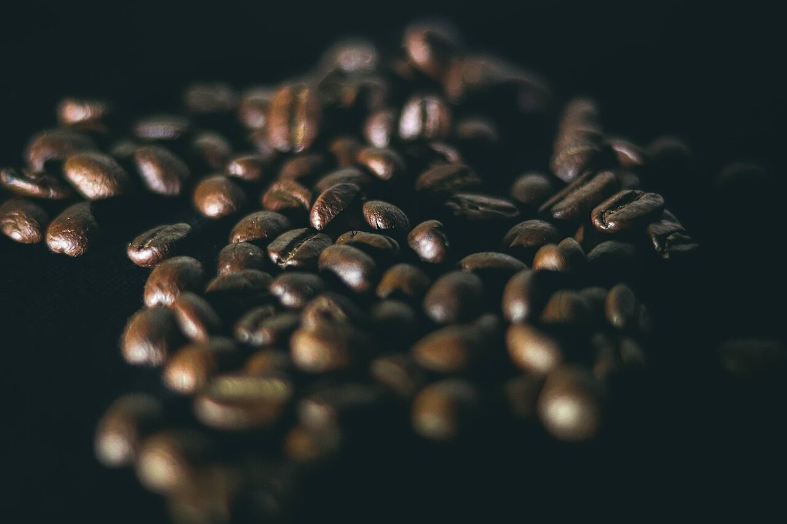

口コミ
こんなふうに思われるかもしれない
お店を知らない人が抱きそうな気持ちを、制作側が創作したものです。
以下は制作側が考えた創作のイメージ例で、実在のお客様の投稿ではありません。実際の口コミ・評価とは関係ありません。
愛媛県大洲市に珈琲の焙煎所があると知って、いつか行ってみたいなと思います。まずはInstagramをのぞいてみようと思います。
「まちなか」という屋号の響きが気になっています。どんなお店なのか、Instagramでゆっくりのぞいてみたいです。
営業時間などが分かったら、行ってみたいです。それまでは、Instagramの更新を楽しみにしています。
